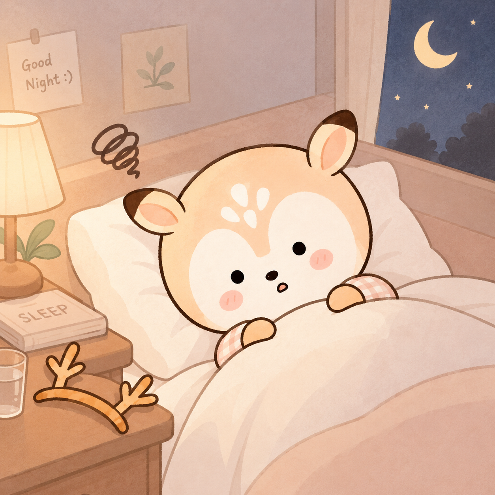

불을 껐는데 머리가 켜집니다. 오늘 있었던 일이 하나씩 지나가고, 지나간 자리에 내일이 들어옵니다. 시간을 확인하지 않으려다 결국 확인하게 되고, 확인하고 나면 남은 시간이 계산되고, 그 계산이 다시 잠을 밀어냅니다.
“내일 또 어떻게 버티지.”
여기까지 오신 분이라면 이미 여러 가지를 해보셨을 겁니다.
카페인도 줄이고 폰도 멀리 뒀는데 왜 그대로일까요?
우리는 잠이 안 오면 대개 비슷한 순서를 밟습니다. 커피를 오후에는 안 마시고, 자기 전 휴대폰을 침대에서 치우고, 방을 어둡게 하고, 주말에 몰아 자지 않으려 애씁니다. 검색하면 나오는 수면 위생 수칙은 대부분 한 번씩 해봤고, 그중 몇 가지는 지금도 지키고 있습니다.
그런데 그대로인 경우가 있습니다. 이럴 때 많은 분들이 자기 관리가 부족했다고 생각하게 되는데, 수면 위생이라는 방법 자체가 잘 자던 사람의 리듬이 잠시 흐트러졌을 때 되돌리는 쪽에 맞춰져 있습니다. 넉 달째 못 자고 있는 몸에는 닿는 층이 다를 수 있습니다. 커피를 끊어서 될 일이었다면 진작 되었을 겁니다.
그러면 남는 선택지가 좁아집니다. 약을 받으러 가거나, 더 버티거나.
잠이 먼저 무너진 걸까요, 낮이 먼저 무너진 걸까요?
이쯤 되면 못 자는 것과 피곤한 것이 한 덩어리로 붙어 있습니다. 잠을 못 자서 낮이 무너지는 것인지, 낮에 이미 다 써버려서 밤에 몸이 못 꺼지는 것인지 본인도 구분하기 어렵습니다. 두 가지가 서로를 먹고 자라기 때문에, 몇 달이 지나면 어느 쪽이 먼저였는지 기억에서도 흐려집니다.
다만 먼저 손댈 자리는 그 순서에 따라 달라집니다. 밤이 무너져 낮이 따라 무너진 경우와, 낮의 긴장이 밤까지 이어져 잠이 밀려난 경우는 몸에서 벌어지는 일이 같지 않습니다. 진료에서 잠 이야기만 듣고 끝내지 않는 것도 그 때문입니다. 몇 시에 누워 몇 시에 깼는지만큼, 낮의 어느 지점에서 무너지는지를 같이 묻습니다.
처음 못 자게 된 이유와 지금 못 자는 이유가 같을까요?
언제부터였는지 되짚다 보면 대개 시작점이 하나 나옵니다. 이직을 앞둔 몇 주, 병간호를 하던 시기, 프로젝트가 몰렸던 달. 그런데 그 일이 끝난 뒤에도 잠은 돌아오지 않습니다. 원인이 사라졌는데 증상이 남아 있으니 설명이 되지 않고, 그래서 자기 탓으로 돌리게 됩니다.
불면을 설명할 때 흔히 세 층으로 나눕니다. 원래 잠이 얕은 편이었다는 소인, 그때 잠을 깨뜨린 사건, 그리고 지금 잠을 계속 밀어내고 있는 것. 앞의 둘은 지나갔는데 세 번째만 남아서 돌아가는 경우가 드물지 않습니다.
세 번째 자리에 들어오는 것들은 대개 잠을 되찾으려고 한 행동에서 나옵니다. 못 잘까 봐 일찍 눕고, 누워서 뒤척이는 시간이 길어지고, 침대가 자는 곳이 아니라 깨어 있는 곳으로 몸에 기억됩니다. 주말에 몰아 자면 그날 밤이 또 밀리고, 낮에 졸다가 저녁에 다시 말똥해집니다. 노력이 잘못됐다는 뜻은 아니고, 그 노력이 세 번째 층을 두껍게 만드는 구조입니다.
여기까지 오면 처음의 “왜 잠이 안 올까”라는 물음이 두 개로 갈립니다. 무엇이 시작했는가와, 지금 무엇이 유지하고 있는가. 손을 대는 쪽은 뒤엣것입니다.
밤이 되어도 꺼지지 않는 것은 무엇일까요?
낮 동안 몸을 움직이게 하는 쪽과 쉬게 하는 쪽은 번갈아 일합니다. 자율신경(autonomic nervous system; 심박과 소화, 체온처럼 의식으로 조절하지 않는 기능을 맡는 신경계)에서 교감신경이 올라가면 심장이 빨라지고 근육이 긴장하며, 부교감신경이 올라가면 그 반대로 내려옵니다. 잠은 후자가 자리를 넘겨받는 시간에 들어옵니다.
문제가 되는 것은 얼마나 올라갔느냐가 아니라 언제 내려오느냐입니다. 긴장이 높았던 하루라도 저녁에 제자리로 돌아오면 잠은 옵니다. 반대로 하루 종일 크게 올라간 적이 없어도 밤까지 내려오지 않으면 몸은 계속 깨어 있는 상태로 남습니다. 자리에 누워 있는데 심장이 뛰는 게 느껴지거나, 피곤해 죽겠는데 눈이 말똥말똥한 순간이 여기에 해당합니다.
이 상태가 길어지면 잠만 밀리는 게 아니라 낮의 회복도 같이 밀립니다. 자도 잔 것 같지 않다는 말이 나오는 구간입니다.
같은 불면에 왜 다른 한약이 붙을까요?
한약으로 잠을 돕는다고 하면 정해진 약 하나를 떠올리기 쉽습니다. 실제로는 어디서 막혔는지에 따라 방향이 갈립니다.
생각이 끊이지 않아 잠에 들지 못하는 경우와, 몸에 열감이나 답답함이 남아 잠이 얕아지는 경우, 기력이 바닥나 오히려 잠을 이루지 못하는 경우에 각각 다른 처방이 붙습니다. 가미사칠탕과 귀비탕, 온담탕과 산조인탕, 십전대보탕이 서로 다른 자리를 맡는 것이 그런 이유입니다. 같은 “잠이 안 온다”는 말을 들고 오셔도 먼저 볼 곳이 달라집니다.
근거 확인
2018년 동의신경정신과학회지에 실린 천왕보심단 체계적 문헌고찰·메타분석에서, 천왕보심단 치료군은 양약 치료군과 비교해 통계적으로 유의한 개선을 보였습니다.
두 값 모두 신뢰구간이 1을 넘지 않았고 이질성(I²)이 낮은 편이어서, 포함된 연구들이 서로 반대 방향을 가리키지는 않았습니다. 다만 비교 대상이 된 양약의 종류와 용량은 연구마다 달라, 이 수치가 특정 약과의 우열을 정한 것은 아닙니다.
2021년에는 『불면장애 한의표준임상진료지침』이 발간되어 한약과 침구 치료의 권고안이 정리되었습니다.
침은 몇 번을 맞아야 달라질까요?
침 치료를 몇 번 받아보고 그대로여서 그만두신 경험이 있을 수 있습니다. 이 물음에 답하는 자료가 있습니다.
근거 확인
2021년 경희대학교 한의과대학 연구진이 국내외 일곱 개 데이터베이스에서 무작위 대조군 연구 24편을 모아 검토했고, 그중 15편(1,475명)으로 침과 약물 치료를 비교했습니다. 수면의 질을 재는 척도(PSQI)에서 침 치료군이 더 크게 개선됐습니다.
포함된 연구들 사이의 이질성(I²)이 85~91%로 높아, 이 수치를 개인의 결과로 그대로 옮기기는 어렵습니다. 다만 시점에 따라 결과가 갈렸다는 사실 자체는 여러 연구에서 같은 방향이었습니다.
두세 번 받아보고 판단하기 어려운 이유가 여기 있습니다. 치료 간격과 횟수를 처음에 정해 두고 시작하는 것도 그래서입니다. 몇 주를 보고 방향을 다시 볼지 정합니다.
잠이 돌아오면 피로도 따라 풀릴까요?
대개는 같이 회복됩니다. 잠이 자리를 잡으면 낮의 바닥도 서서히 올라옵니다.
다만 잠이 정리된 뒤에도 피로만 남는 경우가 있습니다. 몇 달 혹은 몇 해 동안 회복이 밀린 몸에서는 수면이 돌아와도 채워지는 속도가 느립니다. 아침에 일어나는 일이 여전히 무겁고, 오후 중반에 한 번 꺼지고, 주말에 자고 나도 월요일이면 다시 같은 자리로 돌아오는 상태가 그렇습니다.
여기서 한 가지가 갈립니다. 잠이 모자라서 생긴 피로는 잠이 돌아오면 며칠 안에 따라 옵니다. 반면 회복 자체가 오래 밀린 몸에서는 잠이 정리된 뒤에도 바닥이 그대로 남습니다. 같은 “피곤하다”는 말이지만 채워야 할 곳이 다릅니다.
이때는 잠을 돕는 방향과 기력을 채우는 방향을 나눠서 봅니다. 디어한의원에서 공진단을 원내에서 직접 조제하는 것도 이 자리에 쓰기 위해서인데, 잠과 피로 중 지금 어느 쪽이 더 급한지에 따라 순서가 바뀝니다. 둘을 한꺼번에 밀어붙이면 오히려 더디어지는 경우가 있어, 먼저 세울 쪽을 정하고 시작합니다.
알면서도 자꾸 미루게 되는 이유는 무엇일까요?
여기까지 읽고도 미루게 되는 이유는 대개 시간입니다.
평일 낮에 병원에 가려면 반차를 써야 하고, 반차를 쓰려면 이유를 말해야 합니다. 잠 때문에 병원에 간다는 설명이 생각보다 번거롭습니다. 그래서 다음 주로 미루고, 다음 주가 되면 또 일이 생기고, 그렇게 계절이 한 번 바뀝니다. 그사이 몸은 계속 그 상태로 지냅니다.
퇴근하고 오셔도 됩니다
- 월·화·수·금
- 10:00 – 20:00 (점심 13:00 – 14:00)
- 목요일
- 14:00 – 20:00 (점심시간 없이)
- 토요일
- 10:00 – 15:00 (점심시간 없이)
- 일요일
- 정기휴무
서울 서초구 사임당로 143 3층 309호, 310호 · 강남역과 교대역 사이입니다. 예약 후 방문을 권해 드리며, 초진과 당일 접수는 진료 상황에 따라 조기 마감될 수 있습니다.
오시면 이런 순서로 봅니다
잠든 시각과 깬 시각, 새벽에 깨는 시각이 정해져 있는지, 깨고 나서 다시 잠들기까지 걸리는 시간을 먼저 봅니다. 그다음에 낮을 봅니다. 하루 중 언제 무너지는지, 무너진 뒤에 회복되는지, 주말에 자고 나면 풀리는지.
복용 중인 약과 건강식품도 함께 확인합니다. 무엇을 얼마나 오래 드셨는지가 지금 필요한 방향을 정하는 데 실제로 영향을 줍니다. 이미 수면제를 드시고 있다면 그것도 그대로 말씀해 주시면 됩니다.
여기까지 오면 처음의 “잠이 안 온다”는 한 문장이 꽤 여러 갈래로 나뉩니다. 밤이 먼저인지 낮이 먼저인지, 못 드는 것인지 자다 깨는 것인지, 지금 세울 것이 잠인지 기력인지. 방향은 그 뒤에 함께 정합니다.
오늘 밤도 같은 시간에 깨실 것 같다면, 그 시간을 한 번 적어 오시는 것부터 시작해도 좋습니다.
자주 묻는 질문
퇴근하고 가도 진료를 받을 수 있나요?
월·화·수·금은 밤 8시까지, 목요일은 오후 2시부터 8시까지 진료합니다. 토요일은 오전 10시부터 오후 3시까지 점심시간 없이 봅니다. 초진은 시간이 조금 더 걸리므로 예약 후 오시는 편이 낫습니다.
잠 때문에 왔는데 피로 이야기까지 해야 하나요?
잠든 시각과 깬 시각만으로는 방향이 정해지지 않는 경우가 많습니다. 낮에 언제 무너지는지, 무너진 뒤 회복되는지, 주말에 자고 나면 풀리는지를 함께 확인합니다.
불면증 한약은 얼마나 먹어야 하나요?
상태와 경과에 따라 다릅니다. 처음부터 기간을 정해 두지 않고, 복용 중 수면과 낮 컨디션의 변화를 확인하면서 조정합니다.
수면제를 이미 먹고 있어도 진료를 볼 수 있나요?
복용 중인 약의 이름과 용량, 복용 기간을 상담 때 말씀해 주십시오. 무엇을 얼마나 복용해 오셨는지가 지금 필요한 방향을 정하는 데 실제로 영향을 줍니다. 복용 중인 약을 임의로 중단하지 마시고 상담에서 함께 정합니다.
참고한 의학 정보
DEAR KOREAN MEDICINE CLINIC
CONTINUE READING
함께 읽으면 좋은 글

01CALM · 긴장·수면자다가 자꾸 깨는 이유, 선잠은 왜 생길까요?잠은 잘 드는데 자꾸 깨고, 오래 자도 피곤한 선잠과 수면 분절의 원인을 살펴봅니다.칼럼 읽기 → 02CALM · 긴장·수면스트레스가 끝났는데, 몸은 왜 계속 긴장하고 있을까.두근거림·불면·열감·다한증. 증상의 시간표와 동반 증상을 기록하고 치료 전후를 비교하는 디어한의원의 진료.칼럼 읽기 →
02CALM · 긴장·수면스트레스가 끝났는데, 몸은 왜 계속 긴장하고 있을까.두근거림·불면·열감·다한증. 증상의 시간표와 동반 증상을 기록하고 치료 전후를 비교하는 디어한의원의 진료.칼럼 읽기 → 03CALM · 마음가을이면 심해지는 불면, 수면제 없이 불면증수면제를 먹지 않는 밤이 두려워졌을 때, 불면을 지속시키는 각성과 개인별 한약 치료를 살펴봅니다.칼럼 읽기 →
03CALM · 마음가을이면 심해지는 불면, 수면제 없이 불면증수면제를 먹지 않는 밤이 두려워졌을 때, 불면을 지속시키는 각성과 개인별 한약 치료를 살펴봅니다.칼럼 읽기 →